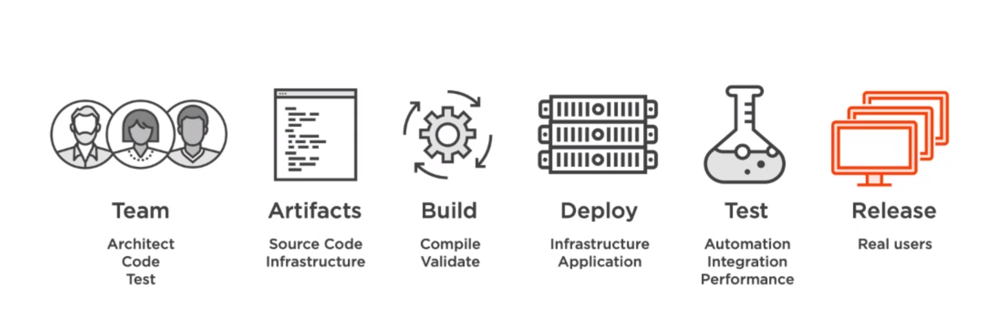
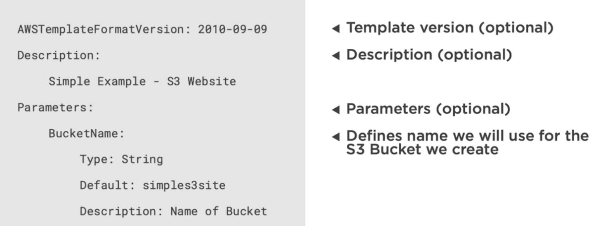
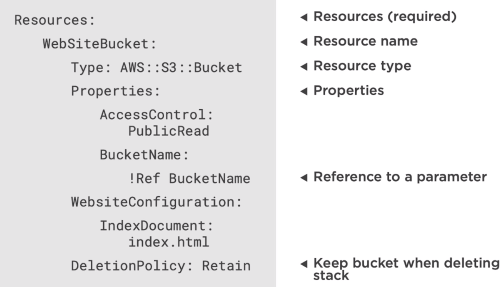
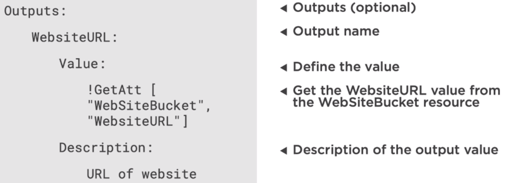
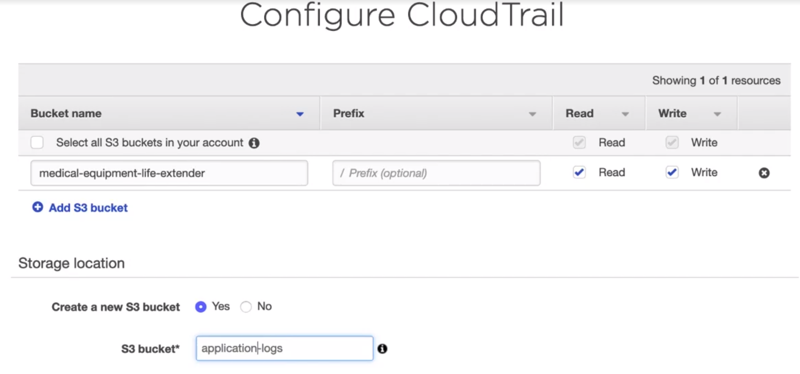
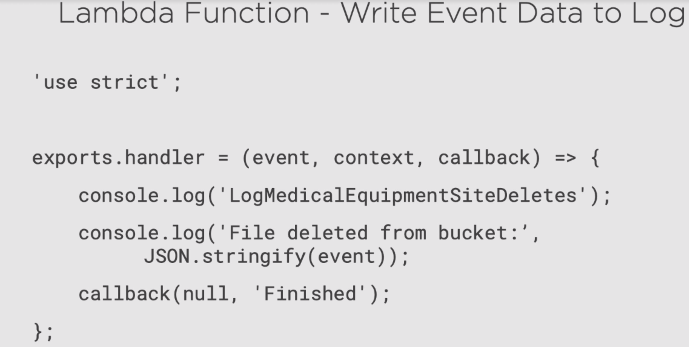
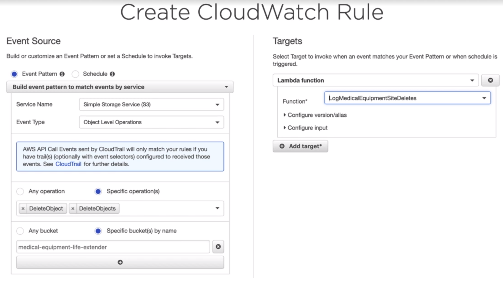

AWS SAA - Architecting for Performance Efficiency
- Part One: Understanding the Design Principles
- Part Two: Considering Compute Performance Options
- Part Three: Reviewing Storage Performance Options
- Part Four: Examing Database Performance Options
- Part Five: Evaluating Network Performance Options
- Part Six: Preparing to Improve Your Architecture
- Part Seven: Monitoring Your Architecture
- Part Eight: Understanding the Trade-offs
Part One: Understanding the Design Principles
There are three main differences compare traditional on premises application and cloud application. 1. Cost. 2. Security and 3. Performance. We are going to focus on number three. Performance.
Cloud services are changing fast.
Go global: AWS have many regions, deploy application to the region that close to the user to reduce the latancy.
Go global: local region will comply to the laws and regulations
- Go global
- Think serverless
- Use new technologies
- Experiment often
- Right tool for the task
Part Two: Considering Compute Performance Options
What does compute performance includes?
Processing -> CPU
Capacity -> Storage
Scaling
Responsive
Economical
Understand your workload
Undetstand AWS compute
Need to gather and analyze data, and testing
AWS compute options
EC2 Elastic Cloud Compute
The default option, virtualized servers. IssA (infrustructure as a service)
Choose resources. You own the OS.(You are responsible for patching the OS and config all aspects of it.)
EC2 General resources
- vCPUs
- Memory
- Storage
- Network
EC2 extra features
- Burstable: if your EC2 is not using its full compute power, you gain credits which you can use in the future when you need it to burst the compute power of your instance for a short period of time.
- GPU
- FPGA (Filled Programmable Gate Arrays): Allows you to create customized hardware accelerators
Instance Types
- General Purpose: Standard, balanced
- Compute optimized: high compute power
- Memory optimized: for memory intensive workloads
- Accelerated computing: GPU or FPGA
- Storage optimized: high storage
- Bare metal
EC2 Auto Scaling
- Metrics based: scale up or down based on the metric you choose
- Schedule based: scale up or down for a booked time
- Health based: replace unhealthy instances
ECS Elastic Container Service
Similar workloads as EC2
Migrate apps to the cloud, long running apps, batch processing, Microservices
Better utilize resources. Can run multiple containers on a single instance. ELB, balance traffic to each container, Autoscaling.
AWS Fargate: manages the instances on which your containers run. you don't need to manage the server instances.
AWS Lambda
FaaS (Function as a service). Serverless computing.
Backend processing, Event processing, Stream processing, Data processing
AWS resource triggers: other resources can trigger Lambda functions
You can choose memory needed for a lambda function
Advantages: Simply execute code. We don't need to worry about the servers that run our Lambda codes.
Automatic scaling for Lambda function.
Fault tolerant: if a function fails, AWS will trigger the function again
Pay for usage
Applying our knowledge
1. A company called Globomantics wants to move their application to cloud. They have customers globally.
The first application they want to move to cloud is an app that collections data from clinical trails. Doctors enter information each time they do checkings.
Considerations for Choice
- First app of many
- Time should be fast
- Predicatable usage
They want to use ECS. Lift and shift: Easy to containerize the app. Able to scale. Able to choose instance sizes.
Allows them to leverage for future applications. Different containers in a single instance. Save costs
2. They also want to build a new web application for the cloud. Allow people to register medical devices. Share medical devices globally.
Considerations for Choice
- Manage costs
- Global reach
- Minimal maintenance
They want to go with Lambda. Services behind a static site to save costs. Only pay for runtime.
Lambda scales besed on demand. Can be deployed to multiple regions. No servers to maintain.
Part Three: Reviewing Storage Performance Options
S3
data is encrypted. Access Managemenet(IAM), Lifecycle management. Query in place.(Don't need to move the data to query it using SQL like command)
- Shared Access
- Low latency
- High thoughput: move data in or out S3 quickly
- High Availability: available for multiple availability zones
- High durability: data is duplicated across multiple availability zones
- Standard
- Intelligent Tier
- Standard Infrequent Access(IA)(high latency)
- One-Zone Infrequent Access(low availability, low durability)
Glacier
Immutable, data do not change once they are in Glacier.
Durable
Query stored data without retrieval.
- Archival storage
- Encrypted
- Access Control
- Audit logging
Latency options.
- Expedited. latency in minutes.
- Standard. Default, number of hours to get data back.
- Bulk. cheaper and takes longer.
Economical, put data in Glacier is cheap and high durable.
Deep Archive. The cheapest and longest. normally 6-12 hours. Do not access data frequently, 2-3 times a year.
EBS (Elastic Block Storage)
Attached to EC2 instances.
Multi-Attach, storage volumn can be attached to up to 16 instances. Instances must be in same availability zone.
Data is Replicated to multiple availbility zones. high availability and durability
Access control.
- Provisioned IOPS SSD
- Standard Purpose IOPS SSD
- Cold HDD
- Thoughput optimized HDD
Snapshots: a snapshots of a storage in that time and can be shared to other zones.
Elastic volumes. pay for what actually stored.
EFS
- General Purpose
- MAX I/O
Same example as before. Migrating to AWS storage. It is one of the web applications. It requires global access. Data will be collected from clinical trials. And some data will be entered on daliy basis.
They need shared access of data.
Data must be durable.
Data will be stored in a long term basis.
S3 and Glacier: high durable. Access from ECS containers. Multiple access. Long term storage.
New application. Provide medical devices to people who need it. Global user base.
Lower cost. Local access. Non-critical images(could be lost, no big problem).
S3: single region. Reduced Redundancy Storage(RRD).
Part Four: Examing Database Performance Options
Install on EC2
we could choose to install a Database on a EC2 instance. But that means we need to do all the backup, restore ourselves. We are not using the serverless managed services provided by AWS. But in some cases, we have to choose this way. Situations like: 1. Control Environment. we want to control everything. 2. Certified. Maybe the services in AWS are not certified by the customer. 3. Specific tools. Our application needs some tools that have to work with standalone database.
- RDS
- DynamoDB
- Redshift
RDS
Default choice. Complex queries. Consistent transactions.
- Multi-AZ
- Read replicas
- Encryption
- Backups and snapshots
- Instance type
- Storage type
- Network setup
- Backup
DynamoDB
Flexible structure
- Flexible structure
- Less complex queries: You are able to query on particular keys, the partition key and any secondary keys that you define. Can't join tables.
- Low latency
- Transactions
- Global tables: store data in multiple regions
- Encryption
- Evolving schema: supports changes and growth in your application(add/remove columns...)
- Integration with Lambda
Partition key: store data on different nodes of the database
Secondary indexes
Provisioned capacity: number of reads and writes. Dynamodb will auto scale
on-demand capacity: pay for what you use. No auto scaling.
Redshift
Large scale analytics
Setup in minutes
Warehouse and data lake
- Encryption
- Scale to petabytes
- Query S3
- Economical
Node type
- Dense compute: fast CPUs, large RAM and SSD for fast performance
- Dense storage
Same example as before.
They want to have minimum effort to do the migration
They want to leverage managed services
Improve availability
They have decided to use RDS. Using SQL server. Structured data. No servers to manage. High availability
New application.
DynamoDB. Flexible data structure(NoSQL). Trigger action(Lambda integration). Flexible cost structure(On-demand pricing). Global tables.
Part Five: Evaluating Network Performance Options
Region and AZ
Regions are geographical area. One region may have multiple AZs that are also isolated to each other.
While the AZs are isolated geographically, they are connected by AWS that allows data to be transferred between each zones.
Local Zones
Some users still think the regions provided by AWS have high latency. They can choose to use local zones. They are built in large cities and connected to near by regions with low latency, high throughput connectivity. Local zones don't have all the services provided by AWS as normal AZs.
Why do we choose one region over another?
- Laws and Regulations: e.g. Some governments required that any data of their citizens remain in their countries
- User location: put application closer to your end users.
- Data location
- Cost
CloudFront
Global network: CloudFront is outside of AWS regions, that deliver our applications to end users
Content delivery: Similar to CDN
- Static content: static content is cached to the place closer to end users to reduce latency
- Dynamic content: AWS also supported Dynamic content (intelligent caching)
- Intelligent: you can setup geo-restrictions to not allow edge content to deliver content to certain geo-locations
- Programmable: Lambda at edge: create serverless functions at edge locations. Put compute power closer to your end users.
Route53
DNS solution for AWS: translate a user-friendly URL to the IP address
Private DNS: Route53 supports private DNS, you can setup friendly names for your internal services
Traffic flow
If you deploy your solution to multiple regions, you can config so that your users only send requests to their regions.
- Latency routing: Traffic flow will determine the region that will be serving the content with the least latency
- Geographic routing: route users to the cloest region.
- Health based routing: not route users to a region that with unhealthy status.
- Round robin routing: route user to the next region available. Route traffic evenly to all regions.
Direct Connect
Instead of going through public internet, AWS will create a dedicated line for users to connect from AWS to your data center. It is encrypted and you can config the speed.
VPC endpoints
Normally, if your VPC wants to connect to other AWS services, it can only go through public internet, but with VPC endpoints, it can connect to other AWS services directly through the private internet AWS network
EC2 instance types
some EC2 instance types have better internet performance than others. Pay attention to it before you launch the EC2 instance. Choose the type that suitable for your applications.
Apply our knowledge
They want their application to be deployed in a single region but to multiple AZs. They use AWS ECS(elastic container service) to manage their application. And use AWS Fargate to manage their containers. They also choose to use Multi-AZ RDS for their DB. They also want their Data to be stored in S3. So they want a VPC endpoint for S3 to reduce latency. So when they want to access data in S3. they don't need to go through public internet.
They also have a new application that they want to have a friendly domain name. Reduced latency and managed cost. So they have decided to use Route53. because the application is hosted on S3 buckets. They need to register domain names for each S3 bucket. And configure Route 53 to route traffic to right S3 bucket using their domain names. They also want to have a global portal that has links to each deployed regions.
Part Six: Preparing to Improve Your Architecture
CI/CD pipeline (Continuous Integration/ Continuous Deployment)
We need to have repeatable builds, repeatable infrastructrue and Controlled tests
CloudFormation
- Infrastructure template(JSON or YAML)
- Automate creation
- Ensure consistency
CloudFormation templates
  - Format version
- Description
- Parameters
- Resources
- Output
Part Seven: Monitoring Your Architecture
Monitor
- Resources
- Application
- Operations
Respond
- Ignore
- Manually
- Automate
- Modify
CloudWatch
Metrics
- Application
- Infrastructure
- AWS or on-premises
Actions: Autoscaling.
Actions: Messages
Actions: Lambda functions can be triggered from CloudWatch
Analytics: CloudWatch can store months of histoical data for you to analyse
Create a log to delete S3 object
- Create CloudTrail Trail
- Create Lambda function
- Create CloudWatch Rule
Create a CloudTrail Trail
Create a Lambda function
Create CloudWatch Rule
Part Eight: Understanding the Trade-offs
- Time
- Cost
- Memory
- Efficiency
- Complexity
Possible Trade-offs
- Queuing
- Partitioning
- Caching
- Compression
Queuing
AWS SQS (simple queuing service)
- Decouple (producer, consumer)
- Scale independently (add producer or delete consumer)
- Acceptable delay
- Time vs Efficiency
Data Paritioning
For example: RDBMS doesn't have partition. so we need to consider what data goes into which instance of database, that increase complexity. Whereas many NoSQL DB already has partition. In DynamoDB, we have partition key for each table. The data that has the same partition key will go into the same node. So when choose a partition key, choose a key that roughly evenly distributed across the data.
- Complexity / consistency vs Time
- RDBMS vs NoSQL
- Distribution
- Maintenance
Caching
Cache: heavliy used data will be stored in memory.
Read Replics: if you have a read replica of your DB, users can go into read replica if they only read. Reduce the traffic of your primary server.
CDN: take data and store data closer to users place.
Memory/ consistency vs Time
Compression
- Code assets: reduce the size of source code to reduce the time to load the application
- Files: same. redurce the size of file will reduce the transfer time
- Time vs memory